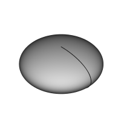

Description
Inserts a primitive ellipsoid in the active Body as the first feature, or fuses it to the existing feature(s).
available in version 0.17

How to use
- Press the Additive Ellipsoid button. Note: the Additive Ellipsoid is part of an icon menu labelled Create an additive primitive. After launching FreeCAD, the Additive Box is the one displayed in the toolbar. To get to the Ellipsoid button, click on the down arrow besides the visible icon and select Additive Ellipsoid in the menu.
- Set the Primitive parameters and Attachment.
- Click OK.
- An Ellipsoid feature appears under the active Body.
Options
The Ellipsoid can be edited after its creation in two ways:
- Double-clicking it in the Model tree, or by right-clicking and selecting Edit primitive in the contextual menu; this brings up the Primitive parameters.
- Via the Property editor.
Properties
- DATAAttachment: defines the attachment mode as well as the Attachment Offset. See Part Attachment.
- DATALabel: label given to the Ellipsoid object. Change to suit your needs.
- DATARadius1: the radius value along the ellipsoid's vertical axis; by default, parallel to the Z-axis.
- DATARadius2: the radius value along the ellipsoid's length; by default, parallel to the X-axis.
- DATARadius3: the radius value along the ellipsoid's width; by default, parallel to the Y-axis. At the default value of zero, the ellipsoid forms an oblate spheroid. This has the same form as if Radius3 is identical to Radius2.
- DATAAngle1: (labelled V parameter in the Primitive parameters) lower truncation of the ellipsoid, parallel to the circular cross section (-90 degrees in a full spheroid)
- DATAAngle2: (unlabelled in the Primitive parameters) upper truncation of the ellipsoid, parallel to the circular cross section (90 degrees in a full spheroid).
- DATAAngle3: (labelled U parameter in the Primitive parameters) angle of rotation of the elliptical cross section (360 degrees in a full spheroid).
{kind=link}
{kind=link}